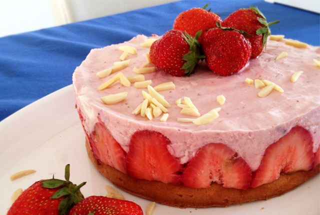

80 gr boter
175 gr kokosbiscuit (of mariakoekjes)
500 gr aardbeien
500 gr kwark
Sap van 1 citroen
12 blaadjes gelatine
250 gr slagroom
150 gr witte basterdsuiker

Bekleed de bodem van een springvorm met bakpapier. Laat de gelatine weken in koud water.
Kruimel de koekjes fijn met de hand of doe ze in een keukenmachine. Smelt de boter en schep deze door de koekjes.
Verdeel de koekkruimels over de bodem van de springvorm en druk aan met de bolle kant van een lepel. Zet de springvorm zolang in de koelkast.
Maak de aardbeien schoon en houd er een aantal apart voor de garnering. Doe de rest van de aardbeien in een keukenmachine en blend helemaal fijn, dit kan ook met de staafmixer.
Verwarm het citroensap in een pannetje en voeg de gelatine toe en roer totdat deze in opgelost en laat daarna wat afkoelen.
Schep de kwark in een grote kom en roer de gepureerde aardbeien en de basterdsuiker er door. Giet ook het citoen-gelatine mengsel er bij en roer door. Klop de slagroom stijf en schep deze ook door de aardbeien-kwark.
Giet het mengsel over de koekjes bodem en laat minimaal 3 uur goed stijf worden in de koelkast (bij voorkeur een hele nacht). Garneer de kwarktaart met verse aardbeien.
©De Bakfabriek
De Bakfabriek is niet verantwoordelijk voor allergische reacties